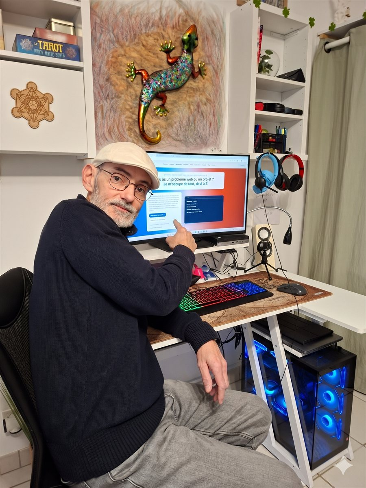
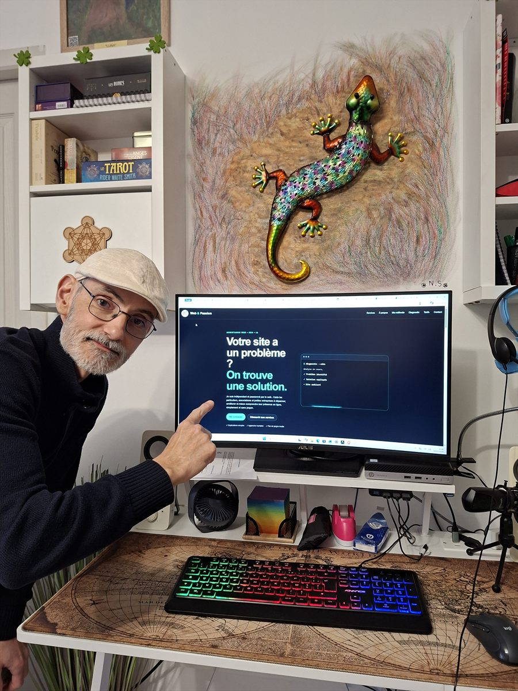

À PROPOS
Philippe JIREAU — Fondateur de Web & Passion (Saint-Maximin-la-Sainte-Baume, Var 83)
Pas une grosse agence anonyme.
Juste moi, Philippe, passionné et prêt à t’aider.
Basé à Saint-Maximin-la-Sainte-Baume dans le Var, j’ai créé Web & Passion avec une idée simple : aider les entrepreneurs, artisans, particuliers et associations à créer, dépanner ou optimiser leur site web sans jargon ni tarifs gonflés. Mais je m’adresse aussi à toi si tu es recruteur ou chef d’entreprise à la recherche d’un développeur motivé en HTML5, CSS3, JavaScript vanilla, PHP et SEO local. Je suis actuellement disponible et réactif pour prendre en charge ton projet ou ta mission avant que mon planning ne se remplisse. N’hésite pas à explorer mon onglet Applications et à revenir régulièrement : j’enrichis ce site en continu avec de nouveaux outils et fonctionnalités.




En images dans le carrousel Clique sur une étape pour afficher la photo
UN PROJET, UN BLOCAGE OU UNE MISSION ?